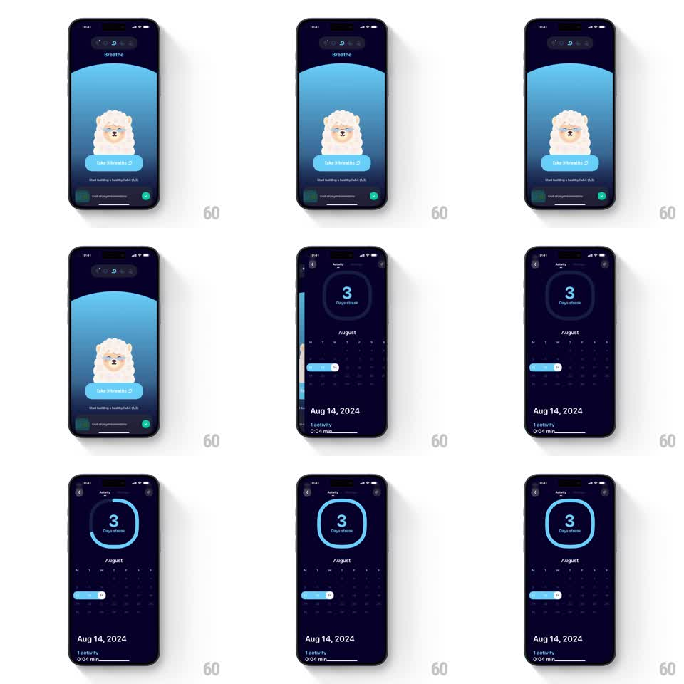

Media
Frame-by-frame

Rebuild this interaction 1:1: Mindllama's activity screen - a circular streak ring that draws itself around the day count on entry, above a month calendar of pill-shaped activity markers.

Rebuild this interaction 1:1: Mindllama's activity screen - a circular streak ring that draws itself around the day count on entry, above a month calendar of pill-shaped activity markers.
## Integration
Integration: stack-agnostic spec - springs given as stiffness/damping, timed motions as duration + curve; map every value to your framework and animation library of choice.
## Scene
Dark navy "Activity" screen (arrived at by swiping from the Breathe home). Top-center: a large ring containing "3" over "Days streak". Below: "August" month calendar grid, active days marked with a light-blue pill spanning consecutive days. Bottom: the selected date ("Aug 14, 2024") with "1 activity" and "0:04 min" stats.
## Motion spec
Pattern: self-drawing circular progress ring.
- On screen entry, the ring's blue arc draws clockwise from 12 o'clock to its streak value over 900ms (ease-out), the track ring visible faintly underneath from the start.
- The streak number counts up 0 to 3 in sync with the arc (same 900ms).
- The arc's rounded cap leads the draw; when it lands, the ring does a subtle pulse (stroke width +1px and back, 200ms).
- The calendar fades in below as the ring finishes (250ms), and the activity pill for the active stretch slides into its date cells (300ms, ease-out).
- Tapping a date updates the bottom stats with a 150ms crossfade; the ring does not redraw.
## Calibration
- The number count and the arc draw are one animation - a count that finishes before the arc reads as two competing loaders.
- Draw starts at 12 o'clock, clockwise only.
## Reduced motion
Ring appears fully drawn; number sets directly.
## Don't miss
- The ring represents the streak, not a percentage of the month - the arc length maps to the streak value on the ring's own scale.
- The calendar's active-day pill is a single connected bar across consecutive days, not per-day dots.